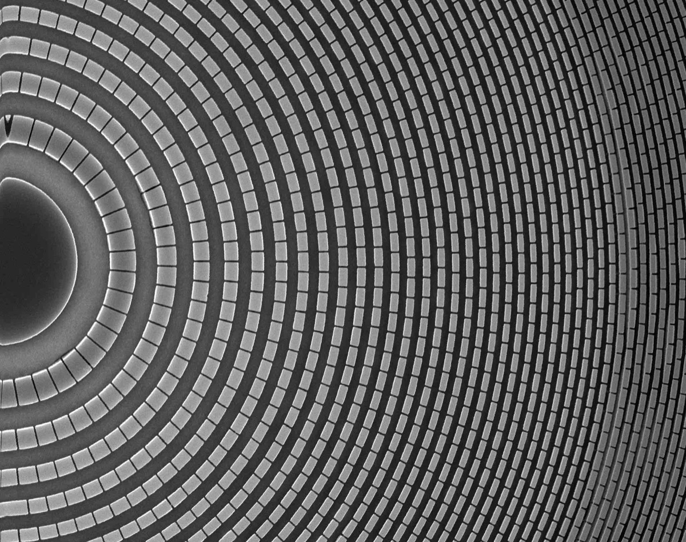

Where we come from
X-ray optics
We made zone plate lenses for X-ray microscopes and helped build the NanoMAX beamline at MAX IV with Lund University. Etching those lenses is how we first used metal-assisted chemical etching.